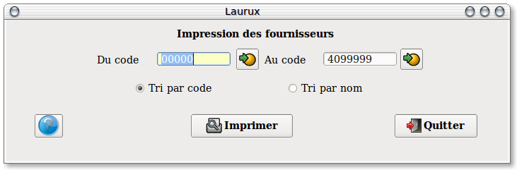

~ Comptabilité et Facturation Laurux ~

~ Comptabilité et Facturation Laurux ~ |
|
|
|

Saisir la fourchette des fournisseurs a imprimer.
Définir l'ordre de l'impression.
----------------------------------------------------------------------------------------------------------------------